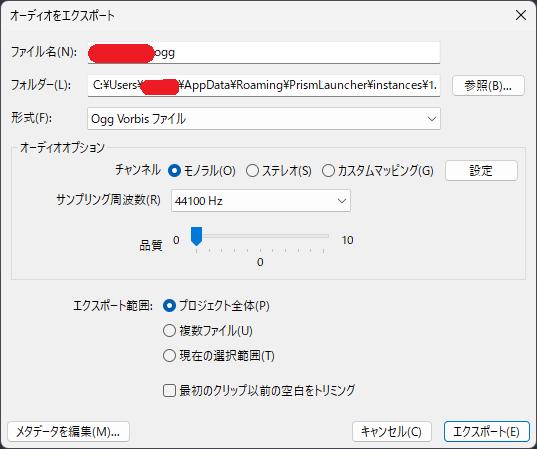
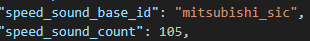

0.元にする走行音を用意します。OTOTETSUやVVVF-Simlator等のソフトで生成したものでも構いません。
1.生成するファイル数を入力(デフォルト:120)
2.切り抜きオフセット値を入力(デフォルト:3.3)
3.音声ファイル一つあたりの秒数を入力(デフォルト:0.6)
4.名前空間IDを入力
6.ファイルがダウンロード出来たら、Audacityを開き、ファイル→インポート→ラベルをインポート と進みます。(Audacityのバージョンによって差異があるかもしれません)
7.先ほどダウンロードしたlabel.txtというファイルを選び、読み込みます。
8.ファイル→インポート→オーディオをインポート と進み、走行音の音源をAudacityにインポートします。
9.次に、ファイル→オーディオをエクスポート と進み、以下の画像と同じ設定でエクスポートします。
また、エクスポートするフォルダは「(起動構成があるフォルダ)/resourcepacks/(自分のリソースパック)/assets/mtr/sounds/(先ほど設定した名前空間ID)/acceleration」に設定してください。
10.エクスポートが完了したら、Ctrl+Aで編集エリア内をすべて選択し、エフェクト→特殊→リバース(逆方向)と進み、適用します。
11.先ほどと同様の手順でファイルをエクスポートします。
ただし、エクスポートするフォルダは「(起動構成があるフォルダ)/resourcepacks/(自分のリソースパック)/assets/mtr/sounds/(先ほど設定した名前空間ID)/deceleration」に設定してください。
12.Minecraftにファイルを認識させるため、「(起動構成があるフォルダ)/resourcepacks/(自分のリソースパック)/assets/mtr/」に先ほどダウンロードしたsounds.jsonを貼り付けます。
13.「(起動構成があるフォルダ)/resourcepacks/(自分のリソースパック)/assets/mtr/mtr_custom_resources.json」を開き、走行音を設定したい車両のプロパティの欄に以下の画像に書いてある内容を追記します。
ただし、speed_sound_base_idは設定した「名前空間ID」に、speed_sound_countは設定した「生成するファイル数」と同じ数値に書き換えてください。
14.リソースパックを適用し、走行音が正常に再生されればOKです。